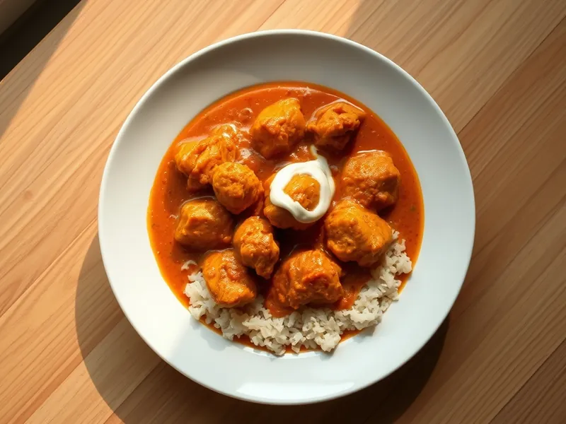

Курица тикка масала
Кусочки курицы в йогурте под пряным томатно-сливочным соусом по-индийски
30 мин3 порц.399 ккал на порциюБ 45 · Ж 18 · У 15Интернациональная кухня
Открыть в приложении: порции, таймеры, список покупок
Продукты на 3 порц.
- Куриное филе500 г
- Йогурт без добавок4 ст. л.
- Томаты в собственном соку1 шт
- Сливки 20%100 мл
- Лук репчатый1 шт
- Чеснок2 зуб.
- Имбирь10 г
- Карри (приправа)2 ч. л.
- Паприка1 ч. л.
- Растительное масло2 ст. л.
- Сольпо вкусу
Как готовить
- Нарежьте филе кубиками 3 см, смешайте с йогуртом, половиной карри и солью и оставьте на 10 минут.
- Пока курица маринуется, мелко нарежьте лук, натрите чеснок и имбирь.
- Разогрейте 1 ст. л. масла на сильном огне и обжарьте курицу 5-6 минут до золотистых краёв. Переложите на тарелку.
- В ту же сковороду налейте оставшееся масло, обжарьте лук на среднем огне 4 минуты до мягкости. Добавьте чеснок, имбирь, остаток карри и паприку и жарьте 1 минуту до аромата.
- Добавьте томаты, разомните их лопаткой и тушите 7 минут, пока соус не загустеет.
- Верните курицу, влейте сливки и прогрейте на слабом огне 3-4 минуты. Курица готова, когда на разрезе нет розового.
Совет. Сливки вливайте только на слабом огне и не давайте соусу бурно кипеть, иначе он может свернуться.